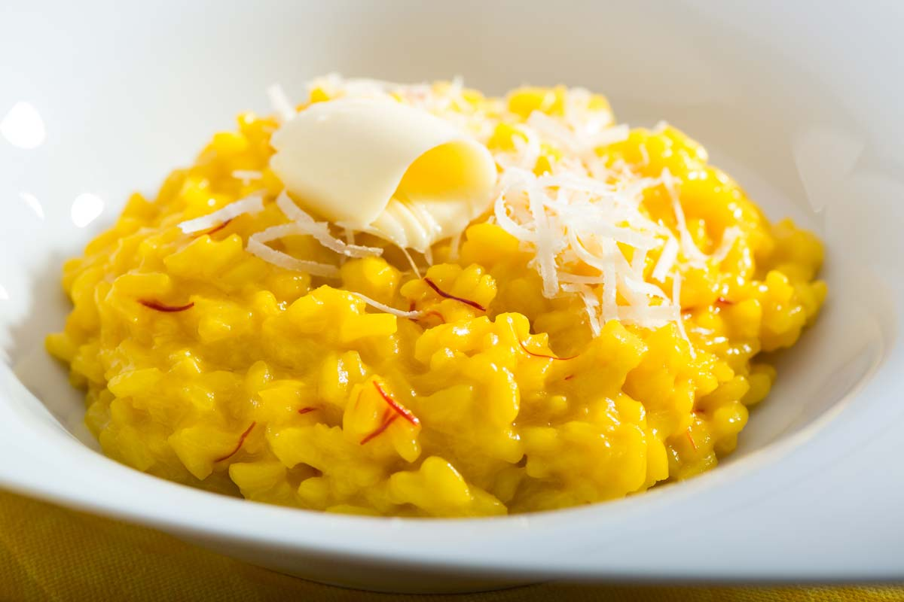

Risotto alla milanese

Description
Risotto is one of the tastiest and easiest to make foods, mainly containing medium grain rice, onions and fats.
For the milanese version, saffron is used to color the rice in a yellowish shade. Beef bone marrow
and some butter are used to sweat the onions.
At the end, some more butter and Parmesan are mixed into
the hot dish.
Debates are going on using wine for Risotto alla milanese. If done so, it is poured onto
the dish
before the bone marrow is added.
Ingredients
- 300 g rice (Carnaroli), superfino
- 1 shallot
- 11⁄2 liter beef broth, no instant
- 90 g butter
- 100 ml white wine
- 1 tbsp. saffron threads
- 75 g Parmesan, grated
- salt and pepper
- Keep the broth hot in a pot without it boiling.
- Soffriggere. In another pot, the shalott is softly sweated in 45g of butter for 5 min, without it turning brown.
- Tostare. Now the rice is being added and stirred until every grain is covered with butter.
- Turn up the heat a little and add wine to the mixture.
- Once the wine is steamed, add all the saffron.
- Cuocere. Trowel by trowel add the hot broth to the rice the next 18 minutes or so. The broth has to just start
boiling, before the next one can be added.
Don't forget to constantly stir to prevent grains of rice from sticking
to the bottom and sides of the pod.
- After about 14 minutes, start reducing the amount of broth to prevent the rice from being liquid in the end.
- Mantecatura. Mix the remaining butter and Parmesan with the rice und add some salt and pepper, as much as you like.
- The perfect consistency, also called "Risotto all' onda", is reached. Now it's time to serve the dish, and don't waste
time eating it, since it's going to lose it's consistency quickly! Enjoy your meal!